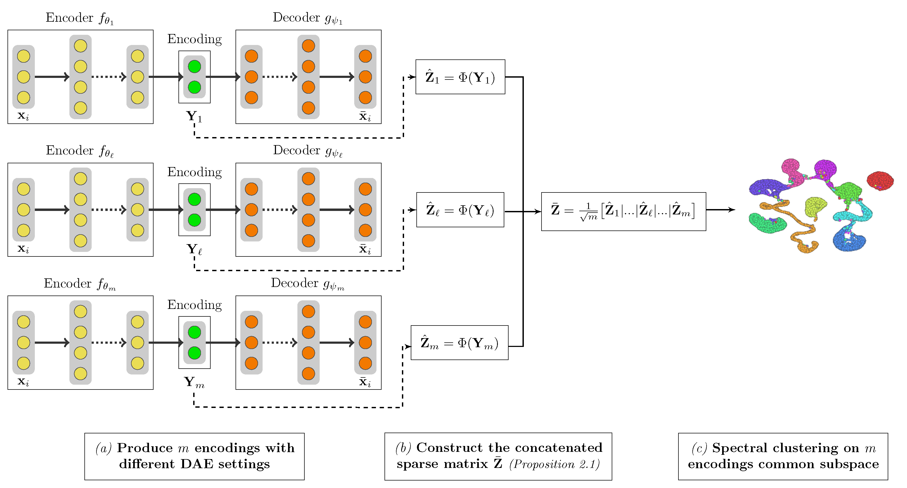
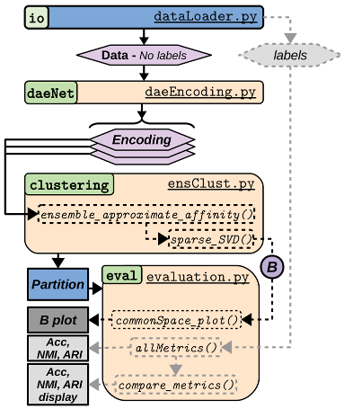

This project is currently under submission process. The source will be made available soon!
This repository contains the source code for CAEclust V1.0 (Consensus of AutoEncoders representations for clustering), python package that implements an original deep spectral clustering in an ensemble framework.
Recently, strategies combining classical clustering approaches and deep autoencoders have been proposed, but their robustness is impeded by deep network hyperparameters settings. We alleviate this issue with a consensus solution that hinges on the fusion of multiple deep autoencoder representations and spectral clustering.

CAEclust offers an efficient merging of encodings by using the landmarks strategy and demonstrates its performance and robustness on benchmark data. CAEclust enables to reproduce our experiments and explore novel datasets.
We summarize the package usage in the following figure and detail below CAEclust functionalities.

[io] dataLoader.py loads a dataset. CAEclust proposes by default two well-known benchmark images datasets, namely USPS and MNIST.
[daeNet] daeEncoding.py sets a DAE with general parameters (e.g. optimizer function, number of epochs, batch size, encoding dimension), and any layer number and width. The method deep_ae() generates the encoded data. The package proposes to generate the encodings either in serial (serial_encodings.py) or in parallel (parallel_encodings.py).
[clustering] ensClust.py computes the ensemble sparse affinity matrix with the method ensemble_approximate_affinity(). The deep consensus clustering is then obtained from the shared space B using the sparse_SVD().
[evaluation] evaluation.py provides 2D and 3D visualizations of the shared space B with commonSpace_plot(). These visualizations are also proposed with the UMAP transformation. When studying benchmark datasets with ground truth labels, allMetrics() function can compute three informative metrics (accuracy, NMI, and ARI). Furthermore, compare_metrics() provides an html summary table to easily compare the CAEclust results with other clustering algorithms.
Download and unzip the CAEclust_package.zip file. We recommand an installation of CAEclust within a mini conda environment (4.11.0).
Install miniconda for python 3.8
Miniconda installers can be dowloaded from here. Installation guidelines for various OS are listed below:
Create a conda environment for python 3.8
conda create -n CAEclustEnv python=3.8
conda activate CAEclustEnv*NB: In case the conda command is not found, close your current terminal window and open a new terminal window.*
Install python packages in the conda environment
conda install scikit-learn matplotlib pandas jupyter ipykernel
conda install -c anaconda jinja2
conda install -c conda-forge umap-learn
pip install numpy==1.20.0conda install -c conda-forge tensorflow=2.7 -vNB: tensorflow installation may take several minutes if you used a miniconda install.
Add your conda environment to jupyter kernel
python -m ipykernel install --user --name=CAEclustEnvLaunch jupyter notebook and access the notebooks (Caution: CAEclustEnv kernel should be set)
cd CAEclust_package
jupyter notebookCAEclust package includes two types of tutorial notebooks.
(1) Baseline_evaluations These first notebooks show the influence of the Deep AutoEncoder (DAE) structure on the clustering for a non ensemble approach.
Example of runs:
- Baseline_evaluations for MNIST
- Baseline_evaluations for USPS
(2) Ensemble_evaluations This second notebook demonstrates the performance and robustness of the CAEclust consensus deep clustering.
Example of runs:
- Ensemble_evaluations for MNIST
- Ensemble_evaluations for USPS
GPL-3.0
Affeldt S, Labiod L, and Nadif M.; CAEclust : A consensus of autoencoders representations for clustering